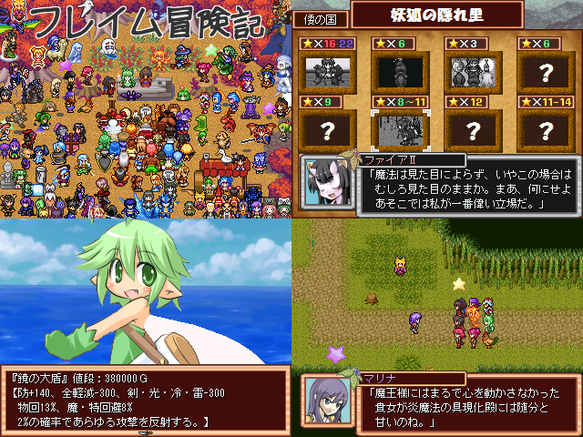

 |
|
| 作者：夢のキービィ | |
| ツクール：2000 | |
| ジャンル：フレイムと愉快な仲間達のインフレ長編RPG（予定） | |
| 配信/投稿：自己責任でお願いします | |
| keyword：今回のメインは光の世界の旅 | |
| 投票：投票はこちら | |
| 作者コメント： 2015年の紅白で提出させて頂いたフレイム冒険記の続きです。 前回が掴みの部分だとしたら今回はゲームとしてもやりたい事としても本番部分に入り、 船に乗って世界各地を旅し、様々な街やダンジョンを訪れ敵と戦ったりイベントをこなしていくという内容になっています。 また、敵が強すぎる・スイッチ技ばかりでオートが機能しない・会話を飛ばせない・避けゲーになっている・ 敵の持ち物や吸収できる能力が一切不明で調べるのが面倒など、前回のエントリーで浮き彫りとなった様々な課題の 修正を行いシステムも大きく更新していますので少しでも遊びやすくなっていたらいいなと思います。 そして、2015年の時に牛と鶏の話のノリで作った会話全般がゲームの世界観に段々相応しくなくなってきたので 前回のイベント会話はほぼ丸ごと変更となっています。もし、辛口のフレイムⅢの台詞群を覚えていたら少し違和感を感じるかも。 二度目の体験版という事もあり大変恐れ多いですが、どうかよろしくお願いします。 |
|
| 管理人コメント： あの大長編RPGが3年の時を経てさらにボリューム増し増しインフレ増し増しで帰ってきた！ |
|
| 更新履歴：12/25公開→12/27更新→01/03更新→01/17更新→01/24更新 | |
| ダウンロード / 感想掲示板 | |
| 前の作品 / 次の作品 / TOPへ戻る | |